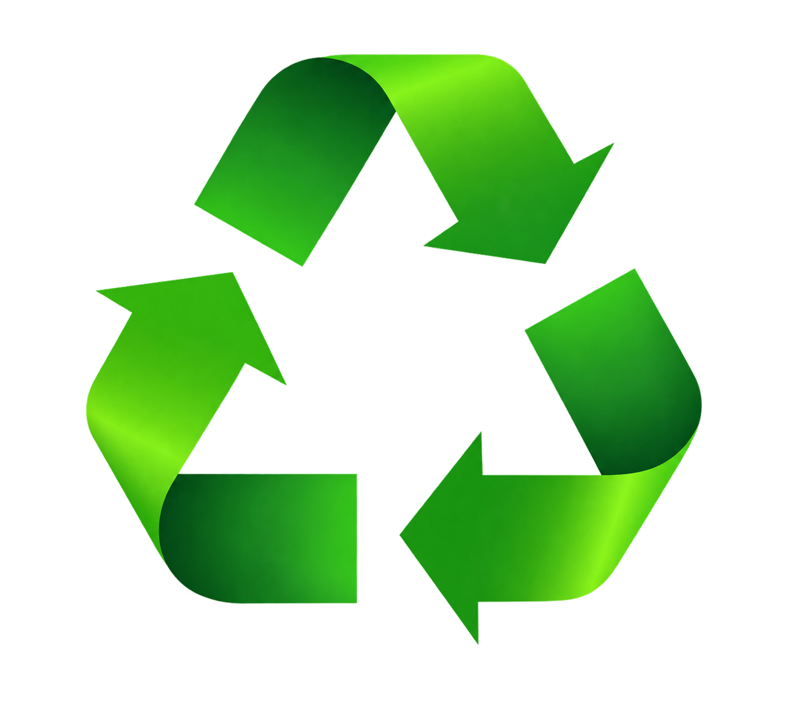

R · E · C · I · C · L · A · G · E · M
Não existe lixo.
Existe destino errado.
Tudo que você descarta hoje ainda pode virar outra coisa amanhã — se seguir o caminho certo. Role a página e veja esse caminho, material por material.
role
por que isso importa
O que uma tonelada de material bem separado evita
economizadas para cada tonelada de papel reciclado em vez de virgem.
menos energia gasta para reciclar alumínio do que para extraí-lo do minério.
é o tempo que uma garrafa PET leva para se decompor sozinha num aterro.
reciclável indefinidamente — o vidro pode virar vidro novo para sempre, sem perder qualidade.
o percurso
Do descarte ao produto novo, em quatro etapas
Coleta
O material sai de casa, do comércio ou da rua — idealmente já separado — e chega a um ponto de coleta seletiva ou cooperativa.
Triagem
Catadores e máquinas separam por tipo: papel, plástico, vidro, metal. Contaminação aqui pode inutilizar um lote inteiro.
Processamento
Cada material é limpo, triturado, derretido ou desfibrado, virando matéria-prima pronta para uso industrial.
Transformação
A matéria-prima reciclada volta ao mercado como embalagem, tecido, peça ou objeto novo — o ciclo se fecha.
separe pela cor certa
Cada material tem sua cor — e sua regra
Padrão de cores da coleta seletiva usado no Brasil (Resolução CONAMA 275).
Papel AZUL
Jornais, caixas e cadernos. Fica de fora: papel engordurado, plastificado ou papel higiênico.
Plástico VERMELHO
Garrafas PET, potes e embalagens. Enxágue antes: resíduo de comida contamina o lote inteiro.
Vidro VERDE
Potes e garrafas. Fica de fora: espelhos, lâmpadas e vidros temperados — têm composição diferente.
Metal AMARELO
Latas de alumínio e aço. É o material com o maior ganho de energia ao ser reciclado em vez de extraído.
Orgânico MARROM
Cascas, restos de comida e borra de café. Não é reciclado — é compostado, e vira adubo.
antes de jogar fora
Mitos que atrapalham a reciclagem
Falso. Restos de comida e gordura contaminam fardos inteiros e podem fazer com que todo o lote seja descartado como lixo comum. Um enxágue rápido já resolve.
Não. Papel com plástico, cera ou gordura não se desfaz em água como o papel comum, e papel higiênico usado é resíduo sanitário — os dois vão no lixo comum.
Cada tipo de plástico (PET, PEAD, PVC, entre outros) tem um processo próprio e não pode ser misturado no derretimento — por isso existem os números de 1 a 7 na base das embalagens.
Faz, sim. A coleta seletiva usa rotas e caminhões próprios, diferentes do lixo comum — a separação em casa é o que torna a triagem depois viável em escala.
comece hoje
Três hábitos que já fecham o ciclo
- Separe por tipo — mesmo sem coleta seletiva na sua rua, cooperativas e pontos de entrega voluntária aceitam material já triado.
- Enxágue antes de descartar — comida e gordura são a principal causa de lotes inteiros rejeitados na triagem.
- Reduza antes de reciclar — reciclar gasta energia; recusar e reutilizar embalagens gasta menos.